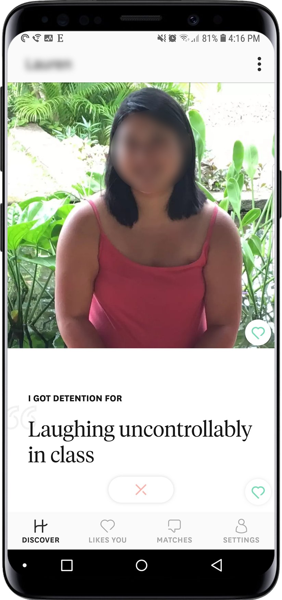

For 35-year-old Jaizi Abedania, a photographer in Brooklyn, online dating is a game of looks, wits, and swipes.
“I feel like back in the day, dating online was more about people who are a bit socially awkward, who wouldn’t dare approach someone they’re attracted to in real life, and it was sort of a safer way to test the waters before diving in,” she said.
According to Pew Research Center, 15 percent of adults in the U.S. have used online dating websites or mobile dating apps, with the biggest users 18 to 24-year-olds. 4 out of 10 American adults know someone who uses the Internet and apps to help navigate their love life, and 6 in 10 of those agree that meeting online is a good way to connect.
“With dating apps, if it doesn’t work out and you’re not feeling any chemistry, you can easily go back to swiping and play again, just with more people,” added Abedenia. “Apps make it so convenient for people to get back in the game.”
Though the technology has changed, the original concept of online dating--matchmaking two people, based on commonalities and personal questionnaire results--remains unchanged. One of the pioneers, eHarmony.com, was established in 2000 with a goal of “matching compatible couples likely to have a long-term relationship,” according to its History of Online Dating. (eHarmony’s original questionnaire was 450 questions, but has since been reduced to 150.)
With the advent of smartphones in the early 2000’s, every online dating service now seems to have its accompanying mobile app, including eHarmony and the even-older Match.com, both of which include a paid subscription for more features.
X
In 2004, OkCupid became the first major dating site to provide free, unlimited instant messaging without a paywall subscription. OkCupid’s methodology of matching users with partners through a ratings system of values-based questions/answers (ex. “Do you believe in a God? Yes, No, or Open”) became a distinguishing feature. The service, which now boasts 1 million app installs per week, maintains that “dating deserves better--and so do you.”
The game was changed in 2012, with the invention of Tinder--a location-based social dating app that allows users to choose between matches by swiping left (“dislike”) and right (“like”).
X
Matching users based on area and common interests turned out to be a quick and simple way to meet people, and swiping became a regular pastime for user on their commutes and in classrooms.
“It’s convenient; when I’m home eating dinner, I could go shopping for a boyfriend,” said Abedania.
Other dating apps and services have been quick to follow on the fast-tapping and swiping trend, including OKCupid, where users can swipe yes or no to people around them; Grindr (geared toward gay and bisexual men), Bumble (where women make the first move), and Coffee Meets Bagel (where matches are limited per day, and women choose who they chat with among the men who express interest).
X
Mobile dating services have also diversified, both for convenience and compatibility. Hinge matches users with friends of friends, based on their Facebook profiles, while newer apps like Pheramor collects social media data and biology--paying users can send their DNA with a cheek swab “genetic testing kit”--to make (almost perfect) matches.
Enter Facebook, the world’s most popular social media platform. The social network announced this month it is entering the game with a new dating feature within its app, which will connect people not from their friends list, but through shared events.
“This is going to be for building real, long-term relationships — not just for hookups,” said Facebook CEO Mark Zuckerberg at a developers conference. “Your friends aren’t going to see your profile, and you’re only going to be suggested to people who are not your friends.”
Though Facebook says it will not use swiping as a feature, the company hopes to connect users as it has since 2004, with privacy and safety as a top priority.
Zoe Strimpel, a researcher at the University of Sussex who studies online dating and relationships, says that “in simplifying and making portable the service, as well as making photos the main event, apps have managed to also make dating cool.”
“Apps have more premium features; the attempt to offer 'exclusive' services, or, in the case of Tinder etc, more control over geography. This has made apps more similar to the sites of yore,” Strimpel added.
Despite the multitude of options and methodologies, these apps and services are all designed with one goal in mind: to connect people and keep them swiping, tapping and chatting, so much it almost feels like a game to beat.
Strimpel wrote about how millennials use dating apps to simply pass the time, creating a “new emotional climate...one of boredom and amusement-seeking, and a lifestyle in which date-seeking, but not necessarily dating `itself, serves as a casual hobby rather than an awkward, laborious, money- and time-intensive effort it might take to meet a soulmate when serendipity has failed.”
Jennifer Manning, 39, a sales representative in Boston, switched from Tinder to Bumble to find a diverse and quality range of men.
“Even though women make the first move, it’s still hard to find a connection. I had to always keep doing background checks on the guy, to make sure he’s not lying about his age or married, or asking for money,” she shared.
Nowadays, people use social dating apps for a variety of reasons and relationships, both casual and serious.
Nicholas Marquez, from Chino Hills, California, met his girlfriend over Bumble.
“I originally used dating apps to in hopes to find a partner that I could eventually call my girlfriend, someone who I can introduce to my parents and be happy with,” Marquez, 22, shared. “I wasn’t looking for someone to just hook up with then never see again. But the more I used the apps, the more I lost sight of what my true objective was, and got caught up in the ‘fun’ of just dating around, and not worrying about the actual issue of commitment. Through some miracle, I actually got a girlfriend from it.”
Spencer Banks, a programmer in Los Angeles, recently switched to Hinge after using Tinder and Bumble for several years. He says using dating apps is overall risky.
X

“It definitely makes meeting people easier, but it can be completely hit or miss when you finally meet someone in person,” said Banks, 29. “Someone easy to text may not have good conversation flow in person. I’m looking for a long-term relationship, so to not be honest about myself [in my interactions] would be counterproductive.”
Abedania agrees with honesty over usability, and says that using dating apps feel like “putting up numbers--the more you swipe, the more success there is you’ll match with someone. And the more you match, the bigger the opportunity to actually go on dates, and that’s seen as a huge victory.”
But Abedania worries about the overall hokeyness of a game she’s played for a long time.
“You still have no idea who people really are. You’re reduced to 5 or 6 pictures and a couple lines of description, but is that realistic? It takes years and years to actually get to know someone. It’s like, the worst game ever.”